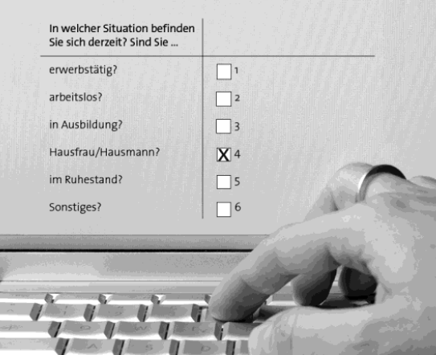
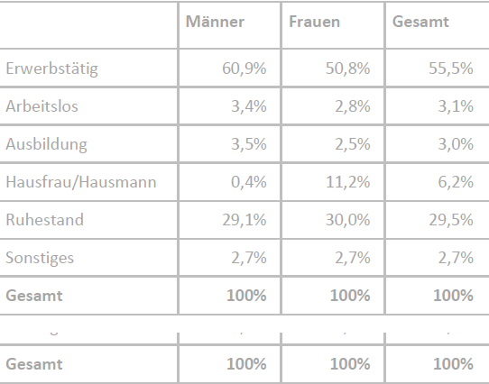

Datenschutz
Erklärung zum Datenschutz und zur absoluten Vertraulichkeit Ihrer Angaben
Die vorliegende Studie wird im Rahmen des DFG-geförderten Projektes AI-SIC „AI-Enhanced Validation of Survey Instruments: Integrating Semi-Automated Methods in Cognitive Interviews for Children’s Self- and Proxy-Assessments of Health (KI-gestützte Validierung von Erhebungsinstrumenten: Integration von halbautomatischen Methoden in kognitiven Interviews für Selbst- und Fremdeinschätzungen der Gesundheit von Kindern)“ (https://www.lifbi.de/de-de/Start/Forschung/Projekte/AI-SIC am Leibniz-Institut für Bildungsverläufe (LIfBi) in Kooperation mit der Universität Leipzig durchgeführt.
Die Ergebnisse der Erhebung werden ausschließlich in anonymisierter Form, d. h. ohne Namen und Anschrift oder andere individuelle Merkmale, welche eine eindeutige Identifikation ermöglichen, dargestellt. Das bedeutet:
Freiwilligkeit der Teilnahme
Die Teilnahme an der Studie ist freiwillig. Der teilnehmenden erziehungsberechtigten Person (Sie bzw. eine andere Person) und Ihrem Kind entstehen keinerlei Nachteile, unabhängig davon, ob Sie oder Ihr Kind an der Studie teilnehmen oder nicht.
Einwilligung zur Teilnahme
Zur persönlichen Kontaktierung sowie zur Verarbeitung der Daten benötigen wir eine Einwilligung. Die Teilnahme an der Studie wird durch die Einwilligung der teilnehmenden erziehungsberechtigten Person (zum Beispiel von Ihnen oder einer anderen Person) sowie die Ihres Kindes, falls Ihr Kind 13 Jahre oder älter ist, auf den übermittelten Einwilligungserklärungen bestätigt. Ohne eine Einwilligung der teilnehmenden erziehungsberechtigten Person und ggfs. Ihrem Kind, falls es 13 Jahre oder älter ist, werden wir weder von Ihrem Kind noch von der teilnehmenden Person selbst Daten erheben oder verarbeiten.
Es gibt keine Weitergabe von Daten an Dritte, die Ihre Person oder ihr Kind erkennen lassen. Sie, die teilnehmende erziehungsberechtigte Person bzw. Ihr Kind erklären die Einwilligung zur Teilnahme an der persönlichen Befragung mit der Übermittlung der angehängten Einwilligungserklärung(en). Nur mit dieser Einwilligung ist die Teilnahme an der Studie möglich, allerdings nicht verpflichtend. Die teilnehmende erziehungsberechtigte Person bzw. Ihr Kind dürfen z. B. einzelne Fragen auslassen, die nicht beantwortet werden wollen. Die Befragung darf jederzeit ganz abgebrochen werden.
Einwilligung zur Übermittlung, Archivierung und weiteren wissenschaftlichen Nutzung der Daten
Zusätzlich möchten wir um Einwilligung zur Übermittlung, Archivierung und weiteren wissenschaftlichen Nutzung der im wissenschaftlichen Forschungsvorhaben AI-SIC erhobenen personenbezogenen Daten, insbesondere der schriftlichen Daten des Interviews (Transkripte), durch das Forschungsdatenzentrum „Qualiservice“ an der Universität Bremen bitten. Das wissenschaftliche Forschungsdatenzentrum „Qualiservice“ an der Universität Bremen archiviert wertvolle Informationen und stellt sie Wissenschaftler*innen für die weitere wissenschaftliche Nutzung zur Verfügung. Die mehrfache wissenschaftliche Verwendung unterstützt damit eine verbesserte Ausschöpfung bereits geleisteter wissenschaftlicher Arbeit. Die Einwilligung zur Übermittlung, Archivierung und weiteren wissenschaftlichen Nutzung wird durch eine separate Abfrage der teilnehmenden erziehungsberechtigten Person (zum Beispiel von Ihnen oder einer anderen Person) sowie ggfs. ihrem Kind auf der/den Einwilligungserklärung(en) gesondert bestätigt.
Wenn die Einwilligung zur Übermittlung, Archivierung und weiteren wissenschaftlichen Forschungsvorhaben AI-SIC erhobenen personenbezogenen Daen (schriftliche Daten des Interviews (Transkripte)) erteilt wurde, werden Ihre Daten spätestens zum Juli 2028 an die Universität Bremen übergeben. Die wissenschaftliche Nutzung der Daten wird durch die Universität Bremen sichergestellt und unter Einhaltung der gesetzlichen Datenschutzbestimmungen überwacht. Die Einwilligung zur Übermittlung, Archivierung und weiteren wissenschaftlichen Nutzung können Sie jederzeit ohne Angabe von Gründen widerrufen.
Kontaktdaten
Damit wir Sie oder diejenige erziehungsberechtigte Person, die an der Befragung teilnimmt, sowie Ihr Kind für die Videobefragung erreichen können, benötigen wir die Kontaktdaten dieser Person (Name, Telefonnummer oder E-Mail-Adresse). Bitte tragen Sie diese Angaben in die Einwilligungserklärung ein.
Widerruf
Die Einwilligungen der teilnehmenden erziehungsberechtigten Person und Ihres Kindes können jederzeit formlos und ohne Angabe von Gründen für die Zukunft widerrufen werden. Bitte richten Sie Ihren Widerruf an Jacqueline Kroh (Tel.: +49 951 700600-25; E-Mail: jacqueline.kroh@lifbi.de).
Sollten Sie bzw. die teilnehmende erziehungsberechtigte Person oder Ihr Kind die Zustimmung zur Nutzung der Daten nachträglich widerrufen, werden wir die originalen, anonymisierten Daten löschen. Das beinhaltet die Mitschnitte des Interviews und verschriftlichte Daten. Ein Teil unserer Analyse erfolgt mit computergestützten, teilweise automatisierten Verfahren. Dabei starten wir mit einem sorgfältig erstellten Datensatz und entwickeln daraus schrittweise ein System, das anhand schwieriger oder unklarer Antworten dazulernt, um unsere Analyse zu verbessern. Die Modelle sehen dabei ausschließlich anonymisierte Ausschnitte der Interviews, sodass keinerlei Rückschlüsse auf einzelne Personen möglich sind. Aufgrund der Funktionsweise dieser Lernverfahren ist es uns allerdings technisch nicht möglich, bereits durchgelaufene Lernschritte rückgängig zu machen, ohne die bisherigen Analyseergebnisse zu verlieren. Die bereits trainierten Modelle werden daher nicht gelöscht. Für neue Auswertungen werden Ihre Daten nach einem Widerruf selbstverständlich nicht weiter verwendet. Mit Ihrer Zustimmung akzeptieren Sie diese Einschränkung. Wir sichern Ihnen zu, dass die Modelle ausschließlich unter strenger Einhaltung wissenschaftlicher und datenschutzrechtlicher Standards gespeichert und verwendet werden. Ein Widerruf hat keinerlei Nachteile für Sie oder Ihr Kind.
Löschfristen
Namen und Kontaktdaten werden spätestens am 31.03.2036 gelöscht. Eine Archivierung über einen Zeitraum von 10 Jahren ist zur steuerrechtlichen Dokumentation seitens des LIfBi notwendig. Entfällt dieser Zweck, werden die Daten unwiderruflich gelöscht.
Audioaufzeichnungen der Interviews (also die Tonaufnahmen) werden spätestens am 30.06.2028 gelöscht. Diese Aufnahmen dienen ausschließlich der Erstellung von Transkriptionen (schriftliche Fassungen der Gespräche).
Erstellte Transkriptionen und Forschungsdaten (also anonymisierte Mitschriften oder Datensätze aus dem Interview) können – nur mit Ihrer Einwilligung – zur Archivierung und weiteren wissen-schaftlichen Nutzung bei qualiservice.de hinterlegt werden. Ohne diese Einwilligung werden diese Daten spätestens am 31.03.2036 gelöscht.
Die Einhaltung der Datenschutzbestimmungen wird kontrolliert von:
Jacqueline Kroh, Datenschutzbeauftragte für das Projekt am LIfBi 1
Was geschieht mit Ihren Angaben?
- Eine Interviewerin oder ein Interviewer des Leibniz-Instituts für Bildungsverläufe wird Sie telefonisch oder per Mail kontaktieren. Während der Befragung wird die Interviewerin oder der Interviewer einige Ihrer Antworten maschinell erfassen, zusätzlich wird das Interview in Form von Audiospuren aufgezeichnet.
- Die Audioaufnahmen und Antworten von Ihnen und Ihrem Kind werden im Anschluss an das Interview an die Universität Leipzig passwortgeschützt über eine gesicherte Verbindung übermittelt und mit Hilfe einer Spracherkennungssoftware in Textform umgewandelt (Transkription).
- Die Namen und Kontaktdaten erhält nur das Leibniz-Institut für Bildungsverläufe e. V. Sie werden strikt getrennt von den Interviews gehalten. Zu steuerlichen Dokumentationszwecken werden nach Ablauf der Erhebungsphase diese Informationen 10 Jahre am Institut ohne Zugriff der Projektmitarbeitenden gespeichert.
- Für die weitere wissenschaftliche Auswertung des Interviewtextes werden alle Angaben, die zu einer Identifizierung Ihrer Person oder von im Interview erwähnten Personen und Institutionen führen könnten, anonymisiert. Das Transkript des Interviews dient nur zu Analysezwecken und wird lediglich in Ausschnitten zitiert.
- Die Daten der Erhebung werden ohne Namen und Kontaktdaten ausgewertet. Der Computer zählt z. B. alle Antworten zur Gesundheit und errechnet daraus Prozentergebnisse. Das Gesamtergebnis und die Ergebnisse für Teilgruppen (z.B. Männer, Frauen) werden in Tabellenform ausgedruckt (siehe Beispiel). Angaben einzelner Personen sind nicht erkennbar.
- Einzelne Zitate werden so dargestellt, dass kein Rückschluss auf Einzelpersonen möglich ist.


Beispiel
Auf einen Blick
Ihre Teilnahme am Interview ist freiwillig.
Die Projektkoordinationen des Projektes, Dr. Jacqueline Kroh, Dr. Andreas Niekler, Dr. Stephan Poppe und Prof. Dr. Julia Tuppat, gewährleisten, dass die gesetzlichen Bestimmungen des Datenschutzes eingehalten werden. Auf Anfrage hin geben Sie Ihnen Auskunft über die dort vorliegenden Kontaktdaten und ändern oder löschen diese auf Ihren Wunsch hin. Bitte wenden Sie sich hierzu an Dr. Jacqueline Kroh. Wir weisen zudem auf das gesetzliche Beschwerderecht bei einer Aufsichtsbehörde hin.
Sie können aber sicher sein, dass wir…
- den Namen Ihres Kindes sowie Ihren Namen und Ihre Kontaktdaten nicht mit Ihren Antworten oder den Antworten Ihres Kindes zusammenführen. So wird niemand erfahren, welche Antworten Sie oder Ihr Kind gegeben haben;
- Ihren Namen und den Namen Ihres Kindes sowie Ihre Kontaktdaten nicht an Dritte weitergeben;
- keine Einzeldaten, die einen Rückschluss auf Ihr Kind oder Ihre Person zulassen, an Dritte weitergeben;
- die Daten ausschließlich zu wissenschaftlichen Zwecken nutzen werden.
Wir danken für Ihre Mitwirkung und Ihr Vertrauen in unsere Arbeit!
Fußnoten
Zuständige Aufsichtsbehörde: Bundesbeauftragter für den Datenschutz und die Informationsfreiheit↩︎